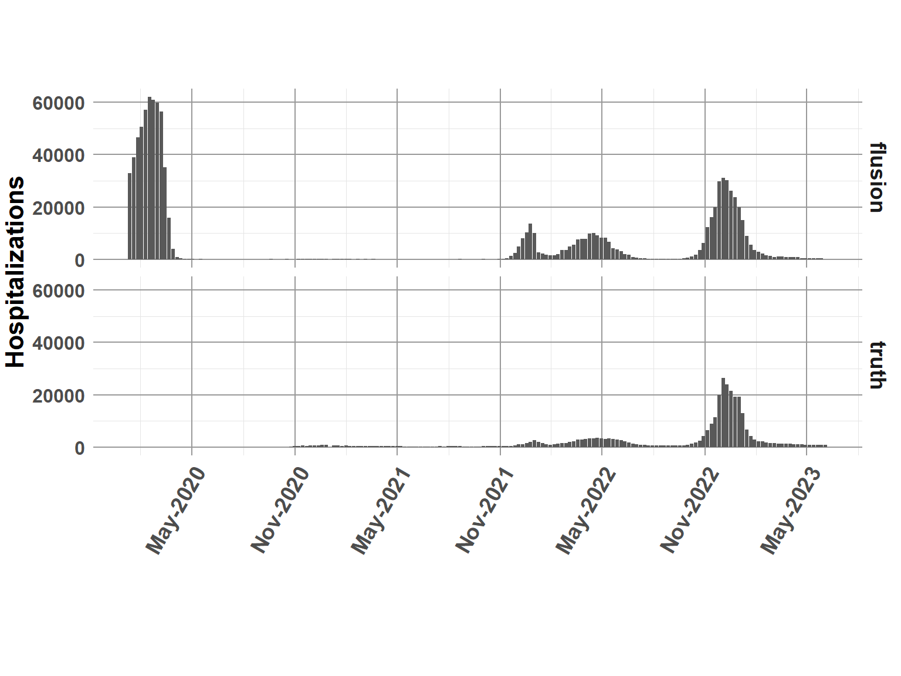
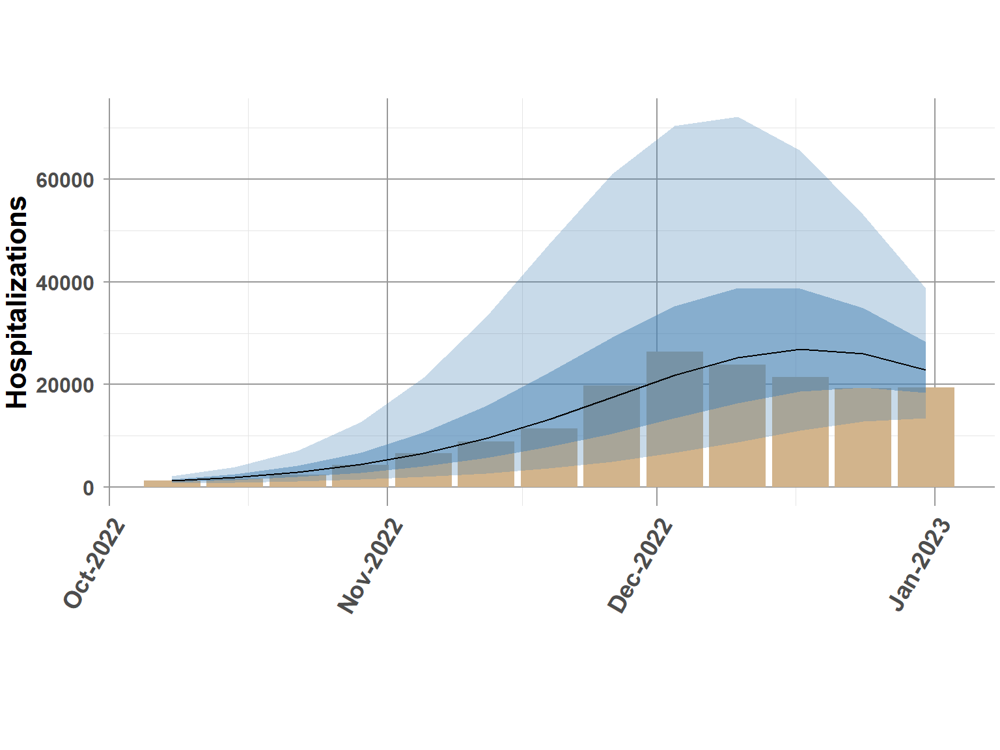
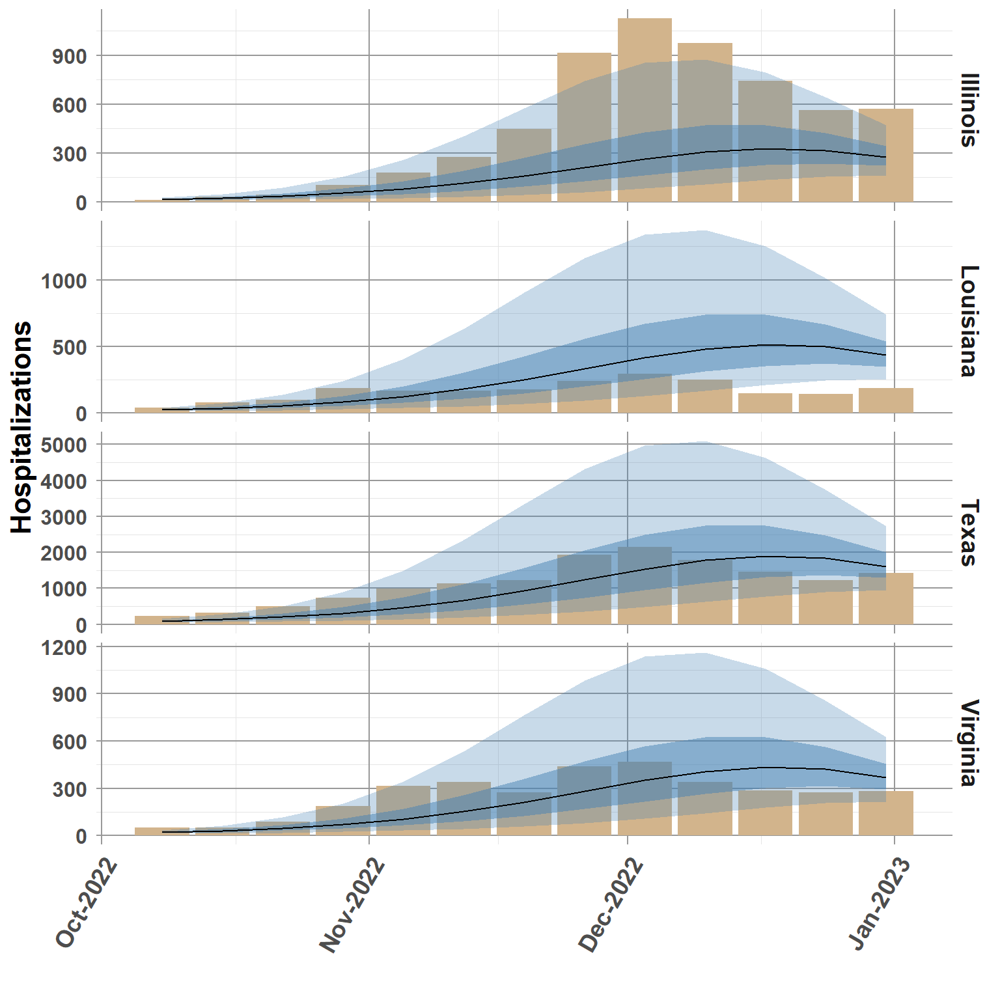

Hide code
#wrangling
library(tidyverse)
library(lubridate)
#inference
library(INLA)
#use adaptive search algorithm
inla.setOption(inla.mode= "experimental")
options(dplyr.summarise.inform = FALSE)This is a quick demonstration of using flusion data to forecast 2022-2023 influenza hospitalizations across all U.S. States and Territories. The demo includes matching flusion to truth data from FluSight, constructing a non-spatial randomwalk model, and then comparing the predicted values to truth data.
Loading libraries.
#wrangling
library(tidyverse)
library(lubridate)
#inference
library(INLA)
#use adaptive search algorithm
inla.setOption(inla.mode= "experimental")
options(dplyr.summarise.inform = FALSE)flusion
#function to downlaod file
get_data <- function(url) {
df <- read_csv(url)
return(df)
}
flusion_url <- "https://github.com/JMHumphreys/flusion/raw/main/flusion/flusion_v1.csv"
flusion <- get_data(flusion_url)
head(flusion)| date | year | epiweek | abbreviation | location | location_name | q_0.025 | q_0.25 | q_0.50 | q_0.75 | q_0.975 |
|---|---|---|---|---|---|---|---|---|---|---|
| 2010-10-09 | 2010 | 40 | AL | 01 | Alabama | 0.13 | 0.43 | 0.80 | 1.48 | 4.83 |
| 2010-10-09 | 2010 | 40 | AK | 02 | Alaska | 0.04 | 0.14 | 0.26 | 0.48 | 1.58 |
| 2010-10-09 | 2010 | 40 | AZ | 04 | Arizona | 2.68 | 8.71 | 16.12 | 29.72 | 93.15 |
| 2010-10-09 | 2010 | 40 | AR | 05 | Arkansas | 0.08 | 0.25 | 0.47 | 0.87 | 2.82 |
| 2010-10-09 | 2010 | 40 | CA | 06 | California | 1.81 | 5.89 | 10.93 | 20.24 | 64.55 |
| 2010-10-09 | 2010 | 40 | CO | 08 | Colorado | 1.12 | 3.65 | 6.77 | 12.55 | 40.19 |
FluSight truth data
#FluSight: 2023-06-12
flusight_url <- "https://github.com/cdcepi/Flusight-forecast-data/raw/master/data-truth/truth-Incident%20Hospitalizations.csv"
flusight_truth <- get_data(flusight_url)
head(flusight_truth)| date | location | location_name | value |
|---|---|---|---|
| 2020-01-11 | 01 | Alabama | 0 |
| 2020-01-11 | 15 | Hawaii | 0 |
| 2020-01-11 | 18 | Indiana | 0 |
| 2020-01-11 | 27 | Minnesota | 0 |
| 2020-01-11 | 30 | Montana | 0 |
| 2020-01-11 | 37 | North Carolina | 0 |
range(flusion$date)[1] "2010-10-09" "2023-06-03"range(flusight_truth$date) #1 week added since flusion.v1[1] "2020-01-11" "2023-06-10"flusight_truth <- flusight_truth %>%
mutate(truth = value) %>%
select(date, location, truth)
comb_data <- left_join(flusion, flusight_truth, by = c("date", "location"))
comb_data <- comb_data %>%
mutate(ts_weeks = as.integer(as.factor(year + epiweek/52)))
head(comb_data)| date | year | epiweek | abbreviation | location | location_name | q_0.025 | q_0.25 | q_0.50 | q_0.75 | q_0.975 | truth | ts_weeks |
|---|---|---|---|---|---|---|---|---|---|---|---|---|
| 2010-10-09 | 2010 | 40 | AL | 01 | Alabama | 0.13 | 0.43 | 0.80 | 1.48 | 4.83 | NA | 1 |
| 2010-10-09 | 2010 | 40 | AK | 02 | Alaska | 0.04 | 0.14 | 0.26 | 0.48 | 1.58 | NA | 1 |
| 2010-10-09 | 2010 | 40 | AZ | 04 | Arizona | 2.68 | 8.71 | 16.12 | 29.72 | 93.15 | NA | 1 |
| 2010-10-09 | 2010 | 40 | AR | 05 | Arkansas | 0.08 | 0.25 | 0.47 | 0.87 | 2.82 | NA | 1 |
| 2010-10-09 | 2010 | 40 | CA | 06 | California | 1.81 | 5.89 | 10.93 | 20.24 | 64.55 | NA | 1 |
| 2010-10-09 | 2010 | 40 | CO | 08 | Colorado | 1.12 | 3.65 | 6.77 | 12.55 | 40.19 | NA | 1 |
tail(comb_data)| date | year | epiweek | abbreviation | location | location_name | q_0.025 | q_0.25 | q_0.50 | q_0.75 | q_0.975 | truth | ts_weeks |
|---|---|---|---|---|---|---|---|---|---|---|---|---|
| 2023-06-03 | 2023 | 22 | WA | 53 | Washington | 0.18 | 0.95 | 2.31 | 5.58 | 29.93 | 19 | 659 |
| 2023-06-03 | 2023 | 22 | WV | 54 | West Virginia | 0.08 | 0.44 | 1.05 | 2.55 | 13.62 | 5 | 659 |
| 2023-06-03 | 2023 | 22 | WI | 55 | Wisconsin | 0.20 | 1.05 | 2.54 | 6.13 | 32.45 | 7 | 659 |
| 2023-06-03 | 2023 | 22 | WY | 56 | Wyoming | 0.07 | 0.40 | 1.00 | 2.47 | 13.83 | 1 | 659 |
| 2023-06-03 | 2023 | 22 | PR | 72 | Puerto Rico | 0.14 | 0.74 | 1.79 | 4.33 | 23.44 | 80 | 659 |
| 2023-06-03 | 2023 | 22 | VI | 78 | Virgin Islands | 0.00 | 0.06 | 0.25 | 0.97 | 12.79 | 0 | 659 |
Quick plot to compare flusion estimates to FluSight truth.
overlap_data <- comb_data %>%
filter(date >= min(flusight_truth$date) &
date <= max(flusight_truth$date))
overlap_natl <- overlap_data %>%
group_by(date) %>%
summarise(flusion = sum(q_0.50),
truth = sum(truth, na.rm=T))
overlap_natl <- reshape2::melt(overlap_natl, "date")
ggplot(overlap_natl, aes(date, value)) +
geom_bar(stat="identity") +
facet_grid(rows = vars(variable)) +
scale_x_date(date_breaks = "6 month", date_labels = "%b-%Y") +
theme_classic() +
ylab("Hospitalizations") +
xlab(" ") +
theme_minimal() +
theme(plot.margin = unit(c(2,0.1,2,0.1), "cm"),
panel.grid.minor = element_line(color = "gray90", linewidth = 0.25, linetype = 1),
panel.grid.major = element_line(color = "gray60", linewidth = 0.5, linetype = 1),
panel.background = element_blank(),
plot.background = element_blank(),
strip.text = element_text(size=14, face="bold"),
strip.background = element_blank(),
legend.position="none",
legend.text = element_text(size=12, face="bold"),
legend.title = element_text(size=16, face="bold"),
axis.title.x = element_text(size=16, face="bold"),
axis.title.y = element_text(size=16, face="bold"),
axis.text.x = element_text(size=14, face="bold", angle=60, hjust=1),
axis.text.y = element_text(size=12, face="bold"),
plot.title = element_text(size=22, face="bold"))
Break data into testing and training sets. Attempt to forecast the most recent flu season 2022-2033.
####Notes:
+ Y is the target response variable in the demo model
+ Dates between Oct 2022 through May 2023 as coded as unknown (NA)
+ The demo model will attempt to predict the NA’s
comb_data$Y <- ifelse(comb_data$year >= 2022 & comb_data$epiweek >= 40, NA, comb_data$q_0.50)comb_data <- comb_data %>%
mutate(intercept = 1, #intercept
Y = round(Y, 0)) #round to integer count data
# copy location index
comb_data$Region.1 <- as.integer(comb_data$location)
#copies of weekly time index
comb_data$ts_weeks.1 <- comb_data$ts_weeks.2 <- comb_data$ts_weeks.3 <- comb_data$ts_weeks#prior
pc.prior = list(prec = list(prior="pc.prec",
param = c(1, 0.5)))
#formula
form.rw <- Y ~ -1 + intercept + #use custom intercept
f(ts_weeks.1, #random walk + noise
constr=TRUE,
model="rw2",
hyper=pc.prior) +
f(ts_weeks.2, #extra variation outside of rw time and linear trends
constr=TRUE,
model="iid",
hyper=pc.prior) +
f(Region.1, #state-level variation
constr=TRUE,
model="iid",
hyper=pc.prior) +
ts_weeks.3 # linear trend
#run model
rw.mod = inla(form.rw, #formula
data = comb_data, #data
family = c("nbinomial"), #negative binomial
verbose = FALSE,
quantiles = c(0.05, 0.25, 0.5, 0.75, 0.95),
control.fixed = list(prec = 1,
prec.intercept = 1),
control.predictor = list(
compute = TRUE,
link = 1),
control.inla = list(strategy="adaptive",
int.strategy = "eb"),
control.compute=list(dic = F, cpo = F, waic = F))The bar chart indicates truth, solid line is the predicted 0.5 quantile, and shaded bands provide the 95 credible interval.
model_out <- rw.mod$summary.fitted.values[,c(3:7)]
names(model_out) <- c("q0.05", "q0.25", "q0.5", "q0.75", "q0.95")
comb_data_pred <- cbind(comb_data, model_out)
rw_natl <- comb_data_pred %>%
filter(is.na(Y) == TRUE) %>%
group_by(date) %>%
summarise(Q0.05 = sum(q0.05),
Q0.25 = sum(q0.25),
Q0.5 = sum(q0.5),
Q0.75 = sum(q0.75),
Q0.95 = sum(q0.95),
truth = sum(truth, na.rm=T))
ggplot(rw_natl, aes(date, truth)) +
geom_bar(stat="identity", fill="tan") +
geom_ribbon(aes(ymin=Q0.05, ymax=Q0.95),fill="steelblue", alpha = 0.3) +
geom_ribbon(aes(ymin=Q0.25, ymax=Q0.75),fill="steelblue", alpha = 0.5) +
geom_line(data=rw_natl,
aes(date, Q0.5)) +
scale_x_date(date_breaks = "1 month", date_labels = "%b-%Y") +
theme_classic() +
ylab("Hospitalizations") +
xlab(" ") +
theme_minimal() +
theme(plot.margin = unit(c(2,0.1,2,0.1), "cm"),
panel.grid.minor = element_line(color = "gray90", linewidth = 0.25, linetype = 1),
panel.grid.major = element_line(color = "gray60", linewidth = 0.5, linetype = 1),
panel.background = element_blank(),
plot.background = element_blank(),
strip.text = element_text(size=14, face="bold"),
strip.background = element_blank(),
legend.position="none",
legend.text = element_text(size=12, face="bold"),
legend.title = element_text(size=16, face="bold"),
axis.title.x = element_text(size=16, face="bold"),
axis.title.y = element_text(size=16, face="bold"),
axis.text.x = element_text(size=14, face="bold", angle=60, hjust=1),
axis.text.y = element_text(size=12, face="bold"),
plot.title = element_text(size=22, face="bold"))
set.seed(34)
random_states <- sample(comb_data_pred$abbreviation, size=4)
states_plot <- comb_data_pred %>%
filter(abbreviation %in% random_states,
is.na(Y) == TRUE)
ggplot(states_plot, aes(date, truth)) +
geom_bar(stat="identity", fill="tan") +
geom_ribbon(aes(ymin=q0.05, ymax=q0.95),fill="steelblue", alpha = 0.3) +
geom_ribbon(aes(ymin=q0.25, ymax=q0.75),fill="steelblue", alpha = 0.5) +
geom_line(data=states_plot,
aes(date, q0.5)) +
scale_x_date(date_breaks = "1 month", date_labels = "%b-%Y") +
facet_grid(rows = vars(location_name), scales = "free_y") +
theme_classic() +
ylab("Hospitalizations") +
xlab(" ") +
theme_minimal() +
theme(panel.grid.minor = element_line(color = "gray90", linewidth = 0.25, linetype = 1),
panel.grid.major = element_line(color = "gray60", linewidth = 0.5, linetype = 1),
panel.background = element_blank(),
plot.background = element_blank(),
strip.text = element_text(size=14, face="bold"),
strip.background = element_blank(),
legend.position="none",
legend.text = element_text(size=12, face="bold"),
legend.title = element_text(size=16, face="bold"),
axis.title.x = element_text(size=16, face="bold"),
axis.title.y = element_text(size=16, face="bold"),
axis.text.x = element_text(size=14, face="bold", angle=60, hjust=1),
axis.text.y = element_text(size=12, face="bold"),
plot.title = element_text(size=22, face="bold"))